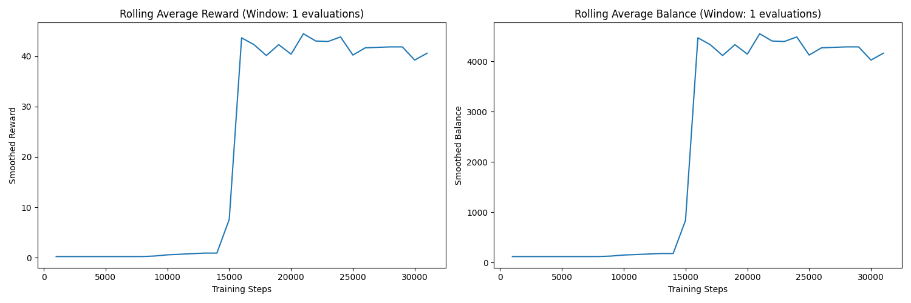
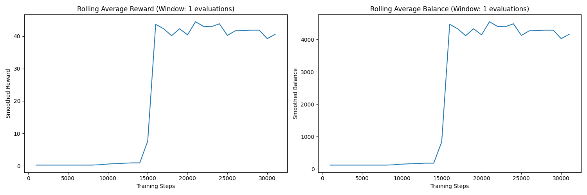

Reinforced Gambler 🎰🤖
A reinforcement learning algorithm designed to beat gambling scenarios. 🚀
📖 Project Overview
The Reinforced Gambler is a reinforcement learning agent trained to maximize its balance in a simulated gambling environment. It uses a Deep Q-Network (DQN) with prioritized experience replay and mixed precision training to learn the optimal strategy. The project includes early stopping, performance monitoring, and automatic graph generation for analyzing training progress.
This project was created as a prototype to compete against PowerisTsutsun's Discord bot.
🯠Key Features
- 🚀 Deep Q-Network (DQN): Learns optimal strategies for maximizing rewards.
- 📊 Prioritized Experience Replay: Improves learning efficiency by focusing on important experiences.
- ⏳ Early Stopping: Automatically stops training if performance plateaus.
- 📈 Graph Generation: Produces graphs for analyzing training progress.
- 🤖 Mixed Precision Training: Speeds up training on GPUs.
📦 Installation
To get started, clone the repository and install the dependencies:
git clone https://github.com/Chungus1310/reinforced_gambler.git
cd reinforced_gambler
pip install -r requirements.txt🚀 Usage
Train the agent by running the Jupyter Notebook:
jupyter notebook training.ipynbMonitor training progress and view generated graphs:
training_progress.png: Overall training metrics.rolling_metrics.png: Smoothed trends using rolling averages.
📊 Results
Here are some key metrics from the training process:
- 🆠Best Balance Achieved: 4546.00
- 🉠Best Average Reward: 44.46
- ⏱️ Training Steps: 31,000
Check out the generated graphs for more insights:
 
